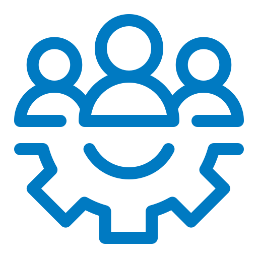
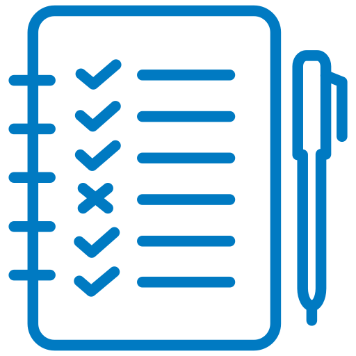
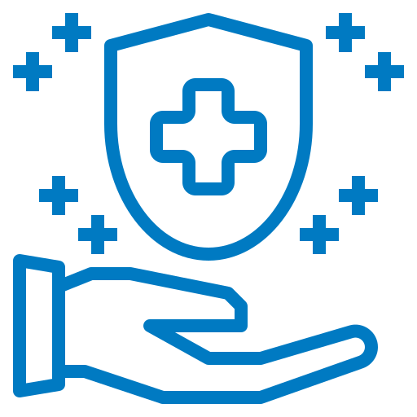
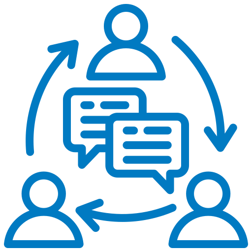

home > 회사소개 > 안전보건경영
안전보건경영
안전보건 최우선 경영 실천을 통해 '모든 사고는 예방할 수 있다'는
신념으로 모든 분들의 생명과 안전을 지키겠습니다.
KGC 안전보건경영방침
코오롱글로벌 주식회사는 「안전보건에 관한 사회적 책임과 종사자, 시민의 안녕을 위하여 기업 경영활동 전반에서 안전보건경영을 최우선 핵심가치로 실천하고 법규 및 기준을 준수하는 안전보건 관리체계를 구축」하여 고객, 주주, 협력업체 임직원, 근로자, 지역사회로부터 신뢰받는 초일류 기업을 목표로 지속적으로 정진하고 있습니다.
principles
코오롱글로벌은 「중대재해 근절」, 「안전하고 건강한 일터 조성」을 최우선 핵심가치로 실천하고, 기본과 원칙 중심의 자기규율 안전문화 내재화를 실현한다.
- 지원
- 경영진은 사업장의 위험요인 제거 및 사전예방을 위한 충분한 인적, 물적 자원을 적기에 지원한다.
- 책임과 의무
- 모든 임직원은 안전보건 관련 법규와 회사규정을 명확히 인지하고 책임과 의무를 다한다.
- 작업환경 확보
- 사업의 모든 단계에서 위험을 사전에 인지하고 안전하고 건강한 작업환경을 확보한다.
- 다양한 의견수렴
- 다양한 의견수렴 및 위험성평가를 통해 유해·위험요인을 지속적으로 발굴하고 즉시 개선한다.
- 안전문화 활성화
- 모든 종사자의 소통과 참여를 보장하고 Safety Plus Kolon 안전문화 활성화에 노력한다.
Managerial Objective
- 1. 중대재해 근절 (ZERO)
- 2. 재해율 10% 감축
- 3. 사전 위험성예방 이행율 100% 달성
KOLON Safety goldenrule
| 골든룰 | 관리감독자 | 근로자 |
|---|---|---|
| 1. 작업전중후 정리정돈 | -현장내 정리정돈 상태 상시 점검하기 | - 작업전중후 정리정돈 습관화하기 - 내가 먼저 정리정돈하기 |
| 2. 안전시설 설치 및 보호구 착용 |
- 개인보호구 착용 및 상태점검하기 - 안전시설 설치 유무 확인하기 |
-개인보호구 착용하고 상태 점검하기 -안전시설 미설치 구간 작업하지 않기 |
| 3. 지정된 이동통로 이용 | - 작업구획별 안전한 이동통로 확보하기 |
-지정된 이동통로 외 통행하지 않기 -이동통로 구간 상시 정리정돈하기 |
| 4. 장비작업시 신호수 배치 및 접근통제 |
- 장비작업시 신호수 배치하기 - 작업구획 설정하고 출입통제하기 |
-장비작업구간 접근하거나 작업하지 않기 -신호수, 줄걸이 작업자는 라이선스 받기 |
| 5. 설치해체 작업구간 출입금지 |
- 설치해체 작업구간 감시자 배치하기 - 설치해체 작업구간 출입통제하기 |
-설치해체 작업구간 절대 출입하지 않기 (거푸집, 동바리, 비계 T/C등) |
| 6. 작업전 작업계획서 작성 및 준수 |
- 작업계획서 작성하고 적정성 검토하기 - 작업계획서 이행상태 상시 점검하기 |
- 작업전 작업계획서 숙지하기 - 작업계획서 위험저감대책 이행하기 |
| 7. 위험성평가 지침 준수 |
- 상시평가제도 준수하기 (월-주-일) - 일일위험성평가(DSP)실시하기 |
- 위험성평가 회의 참여 및 의견 제시하기 - 위험성평가 결과 숙지하고 이행하기 |
| 8. 작업장내 흡연 및 작업전일 음주금지 |
- 작업전 음주측정 실시하기 - 작업구역별 흡연구역 설정하기 |
- 작업전일 과음하지 않기 - 지정흡연구역 외 흡연 절대하지 않기 |
| 9. 현장내 과속 및 작업중 휴대폰 금지 |
- 현장내 제한속도 안내표지 설치하기 - 작업중, 보행중, 운전중 휴대폰 주머니에 |
- 현장내 20km/h 이하 준수하기 - 작업중, 보행중, 운전중 휴대폰 주머니에 |
| 10. 동료 상호간 안전상태 관찰·점검 |
- 동료 상호간 관찰 ·점검토록 교육하기 - 상호 점검에 따른 인센티브 부여하기 |
- 동료 상호간 위험상태 상시확인하기 - 동료 상호간 안전작업 인내하기 |
안전보건 경영시스템
코오롱글로벌 주식회사는 안전보건 경영이념과 비전을 전 임직원과 공유하고 회사가 추구하는 목표와 가치달성을 위한 국내외 안전보건활동을 적극 동참하고 실천하고 있습니다.
- ACTION
- 안전보건 계획 및 실적 이사회 승인
- 분기, 연간 성과측정 모니터링
- 안전보건 예산 투자확대
- 안전보건문화확대
- PLAN
- 사전 위험성 평가
- 사전 작업허가서(Permit To Work)
- 안전보건 정기 협의회
- 협력사 생생 운영위원회
- CHECK
- 안전검사
- 상시 안전보건 점검 체재운영
- 외무전문가 컨설팅
- 계층별 안전보건교육
- 종사자 의견청취
- 저격수급엽체 안전보건 평가 및 개편
- 안전보건 평가 및 상벌규정 적용
- DO
- 경영책임자 안전보건 메시지
- 안전보건 전문가 육성
- 첨단 건설안전 Smart IOT 기술 투자
- Safety Plus Kolon 문화운동
- 안전보건 R&R (Role and Responsibility)
KGC 안전보건경영 인증
코오롱글로벌 주식회사는 재해예방을 위해 안전보건경영시스템을 체계적으로 추진해 나아가고 있습니다.

안전보건 상생경영
코오롱 글로벌 주식회사는 ‘안전최우선 경영방침’ 아래 최첨단 안전보건 스마트 IOT 기술을 사업장에 지원하고 있으며 특히 협력사에 대한 사전 안전보건 적격심사 / 평가체계를 확대하고 우수협력사 육성을 위해 교육, 시설, 포상 등 지속적인 자원을 제공하고 있습니다.
안전 보건 상생경영 지원 Program
-
- 안전보건 기술
- 최첨단 스마트 IOT 기술 지원 및 확대 인체인식(AI) 모니터링을 통한 협착방지, 파일항타시 자동관업 측정 시스템, 터널 통합 안전보건 관제시스템 등 기술 제공
-
- 안전보건 교육
- 안전보건 역량 향상을 위한 실무교육 지원 및 동반성장 협의회 운영 임직원, 협력사 대상 체계적인 안전보건 맞춤형 교육 지원 및 협력사와 자발적 안전보건혁신을 위한 협의회 시행
-
- 안전보건 평가
- 입찰단계부터 사후단계까지 안전보건 평가제도 도입 협력사에 대한 안전보건 역량평가 및 성과측정을 통한 우수협력사 입찰 참여 기회 확대
-
- 보상 및 제재
- 정기, 상시 포상제도 운영 및 과실 평가에 대한 제재 강화 안전보건 우수사업장, 임직원, 협력사에 대한 Incentive 제공 및 과실에 따른 징계, 입찰참가제한 등 재제 범위 확대